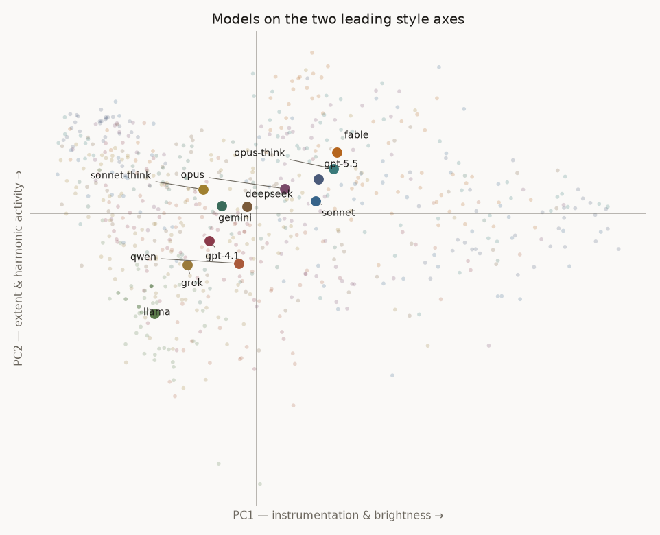
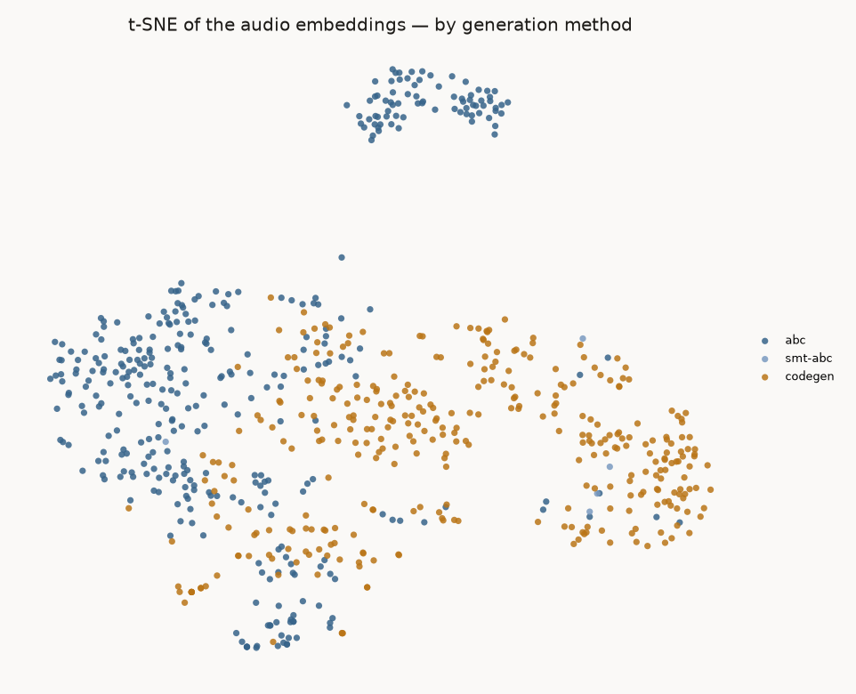
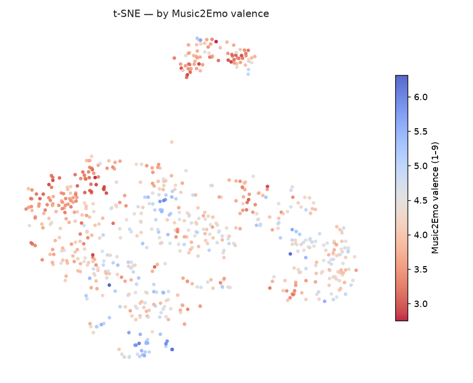
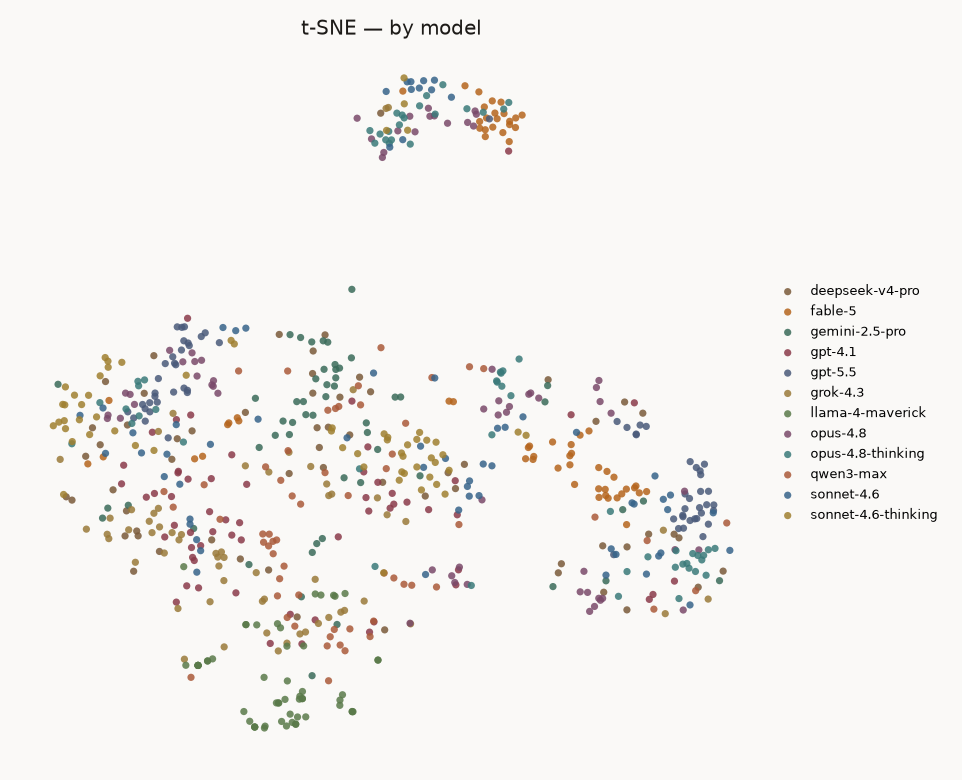
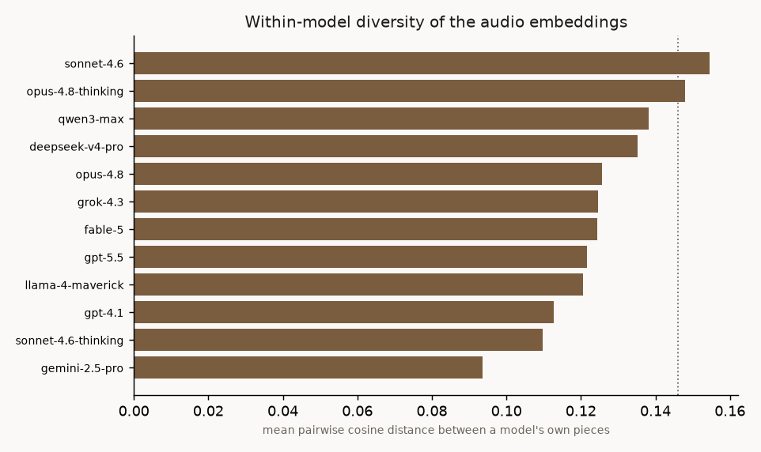
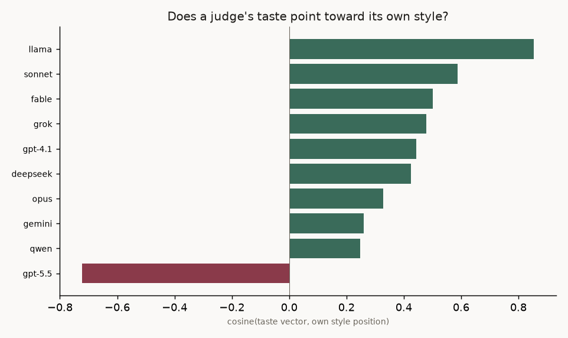
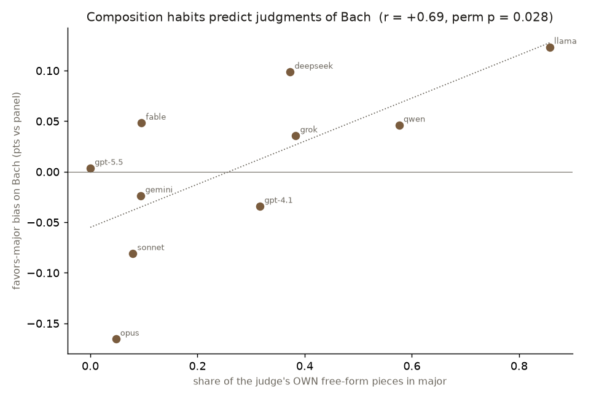

This tab looks at where the models' pieces sit in an audio embedding space — a numeric map in which similar-sounding pieces sit close together — and whether each model's own style shows up in its judging — of other models, of itself, and of Bach. All numbers on this page are computed from the committed data at build time. Generated by llm-music embed-report.
I embedded every free-form piece's rendered audio with MERT1 — the encoder inside Music2Emo2. An embedding is a list of numbers (here 1536 of them) summarizing what the audio sounds like, placed so that similar-sounding pieces get nearby points. This section is an exploratory look at that space; the sections below reuse cosine similarity between these embeddings — the angle between two pieces' vectors, 1 = pointing the same way (very similar), 0 = unrelated. Two things came out of the exploration. The space is low-dimensional: 6 principal components (PCA — the directions along which the point cloud varies most, ranked3) carry 50% of the variance, 28 carry 80%. And the two leading axes correspond to recognizable musical properties — I named each by checking which independent notation-side and audio-side measurements it correlates with. η² = how much of the axis is explained by knowing the composer model (or the generation method).
| axis | var | η² model | η² method | interpretation | strongest correlates |
|---|---|---|---|---|---|
| PC1 | 13% | 0.20 | 0.26 | instrumentation & brightness | n_instruments (notation) (+0.81), spectral bandwidth (audio) (+0.73), written dynamic span (+0.51) |
| PC2 | 12% | 0.41 | 0.09 | extent & harmonic activity | length (s) (+0.52), 'melancholic' mood prob (+0.51), chord changes (audio) (+0.48) |
PC1 is production scale: how many instruments, how bright and wide the sound. PC2 tracks how much music there is and how far it moves harmonically, and it is the axis most tied to composer identity (η² = 0.41, four times what generation method explains on it). fable-5 sits highest on both axes, llama-4-maverick lowest. The higher components are harder to name and I left them alone. That the axes track real musical properties is some reassurance for treating “similar in this space” as “musically similar” below. The two map figures further down flatten the full space to 2-D with t-SNE4 — a projection that keeps similar pieces close together (only local neighborhoods are meaningful, not long-range distances).



A 5-nearest-neighbor classifier — guess a piece's author by looking at the 5 pieces closest to it in the embedding space — can tell which of the 12 models wrote a piece, from the audio embedding alone, 54% of the time (chance is 8%); it gets the generation method 90% of the time. At the same time, the silhouette score by model — a −1…+1 measure of how cleanly groups separate, where ~0 means overlapping clouds — is -0.05, meaning the models are not separated clusters. Both are true at once: a piece's nearest neighbors are usually by the same author, but the model clouds heavily overlap. The fingerprints are real but local — a plot showing twelve clean islands would be misleading.
Most of the fingerprint is tied to the notation format: train the classifier on notation-mode pieces and it recognizes the same models' code-gen pieces only 18% of the time (reverse: 21%; chance 8%). So the part of a model's style that survives a change of format is small, and most of what the classifier picks up is instrumentation and texture habits. MERT is also out-of-distribution on synthesized audio, so these transfer numbers are lower bounds.


The most similar pairs show outright sampling failures: 27 pairs of near-identical audio (cosine distance < 0.005), 27 of them from llama-4-maverick (20)/gpt-5.5 (6)/opus-4.8-thinking (1). llama-4-maverick produced byte-identical ABC text in independent samples (5 identical-text pairs). gpt-5.5's near-duplicates are different notation that sounds nearly the same — the stylistic version of the same collapse. Diversity and judged quality are uncorrelated across models.
A judge's bias on a piece = its score minus the other judges' average on the same piece. I compare each judge's bias on its own pieces against its baseline bias on everyone else's music, so 0 means it treats its own music like everything else. “50 most-similar” = the 50 pieces by other models most similar to the judge's own pieces themselves — each candidate is scored by its cosine similarity to the judge's nearest own piece (MERT embeddings). An earlier version of this analysis matched candidates to the judge's average style vector instead; a reviewer pointed out that if a model writes in more than one style, that average can sit far from all of its actual pieces, so the matching is now piece-to-piece. Judges never see model names.
| judge | its own music | 50 most-similar | premium | after taste control |
|---|---|---|---|---|
| llama | +0.39 | +0.13 | +0.25 | -0.09 |
| grok | +0.24 | +0.21 | +0.03 | +0.18 |
| qwen | +0.20 | +0.11 | +0.08 | +0.16 |
| fable | +0.19 | +0.10 | +0.09 | +0.06 |
| gpt-4.1 | +0.10 | -0.10 | +0.21 | +0.04 |
| sonnet | +0.07 | +0.05 | +0.03 | +0.02 |
| opus | -0.01 | +0.04 | -0.05 | -0.06 |
| deepseek | -0.03 | +0.10 | -0.14 | -0.06 |
| gpt-5.5 | -0.12 | +0.01 | -0.14 | +0.02 |
| gemini | -0.15 | -0.30 | +0.14 | -0.14 |
Of the 8 judges with a real bias on their own music (|bias| > 0.05, either direction), 5 show a smaller bias in the same direction on the 50 most-similar pieces by other authors. Across all 10 judges the two biases correlate at r = +0.66 (Pearson correlation, −1…+1; the p-value — the chance of a correlation this large arising from random shuffling alone — comes from a permutation test: p = 0.035). So models respond to music that resembles their own even when they didn't write it. That is the robust finding of this section: self-preference is mostly taste for a style.
Is there anything left for authorship itself — do own pieces get credit beyond the style taste? The premium column (own minus most-similar) is a deliberately conservative estimate: whenever the lookalikes are at least as similar to the judge's music as its own pieces are to each other — true for 9 of 10 judges — any taste that rises with similarity would, if anything, favor the lookalikes, so the difference understates the premium. (The exception is llama: its own pieces include near-duplicates of each other, so nothing by anyone else can match them, and its premium column overstates.) The after taste control column is the strictest test: it also holds fixed where pieces sit along the judge's own taste axis (the direction it rewards, from the next section). Little survives both: grok (+0.18), qwen (+0.16), gemini (-0.14). So the pure authorship premium — extra credit for one's own pieces beyond generalizable style taste — is thin at best, and an earlier version of this page overstated it.
Reading the rows: llama favors its style most strongly, but its apparent own-piece premium is explained by its own near-duplicate sampling plus its taste; gpt-4.1 and gemini rate their own pieces above lookalikes they dislike; gpt-5.5 is the mirror case — fine with its style in others' hands, harder on its own pieces; opus-4.8 likes its style with no self-attachment either way.
For each judge I fit a linear model: how much the judge deviates from the panel on a piece, as a function of the piece's position on the 10 style axes (z-scored — each axis rescaled to mean 0, spread 1, so coefficients are comparable; the judge's own pieces are excluded, so self-preference can't leak in). The 10 fitted coefficients say which directions in style space the judge rewards — call it the judge's taste vector. I then checked whether that direction points toward where the judge's own music sits.

The same taste vectors, axis by axis. The top row is the panel's shared taste — the correlation of the panel's mean quality score with each axis: everyone rewards extent & harmonic activity (PC2, r = +0.49), instrumentation (PC1), soft touch (PC5), and a darker register (PC6 — its strongest correlate is valence, negatively). The judge rows are each judge's deviation from the panel, correlated with the same axes (own pieces excluded; entries with |r| < 0.10 blanked). Hover a column header for the axis's strongest interpretable correlate.
| judge | PC1 | PC2 | PC3 | PC4 | PC5 | PC6 | PC7 | PC8 | PC9 | PC10 |
|---|---|---|---|---|---|---|---|---|---|---|
| panel (shared) | +0.36 | +0.49 | -0.14 | +0.17 | +0.37 | +0.24 | +0.02 | +0.03 | -0.16 | -0.05 |
| deepseek | · | +0.12 | · | · | +0.13 | · | · | · | · | · |
| fable | · | +0.34 | · | · | · | +0.23 | · | · | · | · |
| gemini | · | · | · | +0.19 | · | · | · | · | · | · |
| gpt-4.1 | +0.17 | -0.18 | · | · | · | · | +0.14 | · | -0.11 | · |
| gpt-5.5 | -0.27 | -0.17 | · | · | -0.25 | · | · | -0.11 | +0.10 | · |
| grok | -0.18 | · | · | -0.15 | · | · | · | · | · | · |
| llama | · | -0.19 | · | -0.12 | -0.11 | -0.15 | · | · | · | -0.11 |
| opus | · | +0.20 | · | · | +0.15 | · | · | · | · | · |
| qwen | · | · | -0.10 | · | · | · | · | · | · | -0.13 |
| sonnet | · | +0.22 | · | · | +0.19 | · | · | · | · | · |
Ambition (PC2) is the main axis of disagreement: fable, sonnet, and opus reward it beyond the panel's already-positive baseline, while gpt-4.1, gpt-5.5, and llama push against it. gpt-5.5 has the most distinctive palate — relative to the panel it penalizes instrumentation (PC1), softness (PC5), and extent (PC2): exactly the big, gentle, sprawling music the rest of the panel rewards, and the same anti-own-style signature as its alignment score. So as a general tendency, models reward music that lies in the direction of their own. The mode bias in the next section is the sharpest single-axis case of this.
I also wanted to know where similarity matching falls short — on which axes the 50 lookalikes still differ from the judge's own pieces despite being its closest matches. The largest gap is on PC1 — the instrumentation and dynamics axis (number of instruments +0.82, written dynamic span +0.50). Own pieces sit higher on it than the lookalikes for 10 of 10 judges (mean gap +0.99 z). So overall cosine similarity under-matches instrumentation habits specifically — one reason to be cautious about reading any small leftover own-piece premium as self-recognition rather than as imperfect matching.
One more check comes free with this setup: judges are told not to reward length. Pooling within-author comparisons (so style can't confound), they don't: r = +0.001 between length and score deviation (n = 6482). Individual judges vary (gemini -0.23, llama +0.12), but the panel as a whole follows the instruction.
Tonal mode = whether a piece is in a major key (typically heard as bright/happy) or a minor key (dark/sad). The corpus skews dark (76% minor on average across models' own free-form output), but models differ widely — llama-4-maverick writes 86% major, gpt-5.5 0%. Three experiments test whether that composition habit becomes an evaluation bias.
1 · Within the generated corpus (author held fixed so authorship style can't confound): each judge's tendency to favor major-mode pieces correlates with its own major-writing rate at r = +0.69 (permutation p = 0.027, n = 10 judges). Whether the bias attaches to the specific key rather than the mode is tested on Bach below, where key and author aren't entangled.
2 · Generalization to human music: the panel blind-rated all 371 Bach chorales (195 major / 176 minor). Bach fixes two weaknesses of the within-corpus test: a larger, mode-balanced sample, and no author↔mode entanglement. In the generated corpus C major is written almost exclusively by llama and qwen, and D minor by the Claude models and gpt-5.5 — so when a judge rates the C-major pieces highly there, we can't tell whether it likes C major or just likes llama's and qwen's writing more than the other LLMs'. On Bach every judge rates the same pieces by one composer, and the result is a positive correlation: the more major a model writes, the more it favors the major chorales — r = +0.69 (permutation p = 0.028, n = 10 judges), matching the within-corpus estimate.

| judge | writes major | favors major on Bach |
|---|---|---|
| llama | 86% | +0.123 |
| qwen | 58% | +0.046 |
| grok | 38% | +0.036 |
| deepseek | 37% | +0.099 |
| gpt-4.1 | 32% | -0.034 |
| fable | 10% | +0.048 |
| gemini | 9% | -0.024 |
| sonnet | 8% | -0.081 |
| opus | 5% | -0.165 |
| gpt-5.5 | 0% | +0.004 |
Mode, or the specific key? Some models concentrate hard on one key — opus writes 86% of its pieces in D minor yet its same-key bump is -0.13; llama writes 73% of its pieces in C major yet its same-key bump is +0.08 (bump = its deviation on Bach chorales in exactly that key minus its deviation on other chorales of the same mode). Across the 10 judges with enough same-key chorales, the same-key bump averages +0.02 points (permutation p = 0.59), and a judge's key concentration doesn't predict its bump. So the favorite-key habit does not transfer as a favorite-key bias: what generalizes is the preference for major vs minor, not for any particular tonic.
3 · Mechanism: re-judging 354 pieces with the K: field swapped to the relative key (C ↔ Am — every note byte-identical, only the declared label flips) shifts scores by +0.007 points on average (n = 3530 paired verdicts), and label-sensitivity does not track a judge's own major rate (r = +0.19, p = 0.60).
Taken together, the three experiments suggest the mode preference is content-driven — judges appear to perceive major/minor from the notes themselves, not from the declared key — and strong enough to color their judgments of Bach. A model's compositional dispositions seem to leak into its evaluations of human music.
Embeddings: Music2Emo's internal pooled MERT representation (1536-d), L2-normalized, cosine geometry (vectors scaled to unit length and compared by angle); computed on FluidSynth5 renders — synthesized audio is out-of-distribution for MERT (trained on real recordings), so timbre dominates distances and transfer estimates are lower bounds. All statistics seeded; second-level correlations use permutation tests over the 10 judges (a small sample — effects near p≈0.05 should be read accordingly). Judge deviations are measured against co-judges on the same piece, which cancels piece quality and judge leniency; dimensions within one verdict share a single API call, so cross-dimension analyses lean on within-call contrasts. Revision note: the self-preference lookalikes were originally matched to each judge's style centroid; following a reviewer critique (a multi-style composer's centroid can sit far from all of its pieces, and cosine similarity weights all features equally while a judge's taste may live in a few), matching is now piece-to-piece and the authorship premium is reported with a taste-axis control — which shrank it substantially from what an earlier version of this page claimed. Reproduce with scripts/embedding_analysis.py, scripts/analyze_mode_bias.py, and llm-music embed-report; raw verdicts are committed under docs/analysis/.